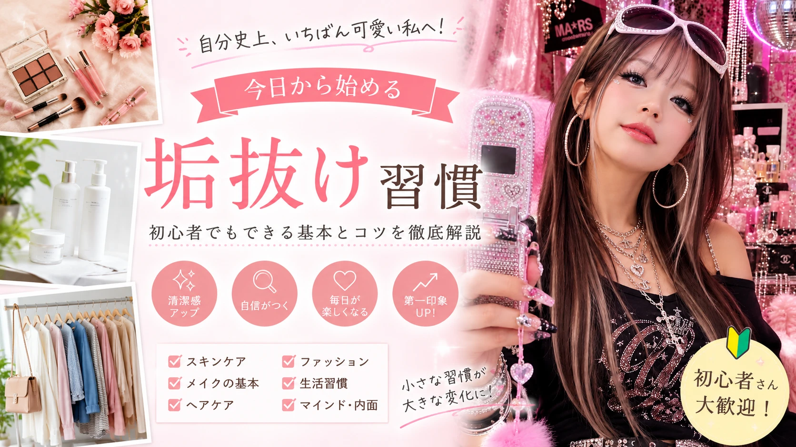

垢抜け・美容
今日から始める
垢抜け習慣
メイク・スキンケア・ヘアケア・ファッションを見直して、
自分らしい魅力を引き出しましょう。

「垢抜けたいけど何から始めればいいか分からない…」
「美容やファッションに自信がない…」
そんな悩みを持つ方は少なくありません。
「垢抜ける」とは、
自分らしさを大切にしながら、
清潔感や第一印象をより良く見せることです。
高価なコスメやブランド品を揃える必要はありません。
毎日の小さな習慣を少しずつ見直すことで、
印象は大きく変わります。
この記事はこんな人におすすめ
- 垢抜けたい初心者
- 美容を始めたい
- 第一印象を良くしたい
- 清潔感をアップしたい
- 自分に自信を持ちたい
まずは「垢抜け」の考え方を知ろう
垢抜けることは、誰かの真似をすることではありません。
自分らしさを大切にしながら、清潔感や身だしなみを整えることで、
第一印象をより良く見せることができます。
一度にすべてを変えようとすると続きません。
小さなことを一つずつ習慣にすることが、
垢抜けへの近道です。
垢抜けるための3つの基本
- 清潔感を意識する
- 自分に合ったスタイルを見つける
- 毎日少しずつ続ける
スキンケアを見直そう
肌が整うと、メイクの仕上がりや全体の印象も変わります。
高価な化粧品よりも、毎日の基本的なケアを続けることが大切です。
洗顔
朝と夜にやさしく洗顔し、
汚れや余分な皮脂を落としましょう。
保湿
化粧水と乳液でしっかり保湿し、
肌のうるおいを保ちます。
紫外線対策
季節を問わず日焼け止めを使用し、
紫外線から肌を守りましょう。
メイクで自然な印象アップ
メイクは「濃くする」ことではなく、
自分の魅力を引き出すための手段です。
初心者はナチュラルメイクから始めるのがおすすめです。
- 肌に合ったベースメイクを選ぶ
- 眉毛を整える
- 血色感のあるリップを使う
- アイメイクは自然な色味を選ぶ
- メイク後はしっかり落とす
自然なメイクは清潔感があり、
学校・仕事・普段使いにも取り入れやすいのが魅力です。
ファッションを見直して清潔感アップ
垢抜けるために高価なブランド品は必要ありません。
サイズが合っていて清潔感のある服装を選ぶだけでも、
印象は大きく変わります。
サイズ感を意識する
大きすぎる服や小さすぎる服よりも、
自分の体型に合ったサイズを選ぶことが大切です。
ベーシックカラーを取り入れる
白・黒・ネイビー・ベージュ・グレーなどの
落ち着いた色はコーディネートしやすく、
初心者にもおすすめです。
シワや汚れをチェック
おしゃれな服でもシワや汚れがあると
清潔感が損なわれます。
外出前に確認する習慣をつけましょう。
ヘアスタイルを整える
髪は顔の印象を大きく左右します。
毎日のお手入れを少し意識するだけでも、
清潔感のある印象につながります。
- 定期的に髪を整える
- 寝ぐせを直してから外出する
- シャンプー後はしっかり乾かす
- ヘアオイルでまとまりを出す
- 自分に合う髪型を見つける
姿勢・表情も垢抜けのポイント
どんなにおしゃれをしていても、
猫背や暗い表情では魅力が伝わりにくくなります。
今日から意識したいこと
- 背筋を伸ばして歩く
- 自然な笑顔を心がける
- 相手の目を見て話す
- 清潔感のある身だしなみを意識する
外見だけでなく、
立ち振る舞いや表情も第一印象を左右する大切な要素です。
生活習慣を整えて内側から垢抜けよう
垢抜けはメイクやファッションだけではありません。
毎日の生活習慣を整えることで、
肌や髪のコンディションが保ちやすくなり、
健康的で明るい印象につながります。
😴
十分な睡眠
規則正しい睡眠は、
肌や体のコンディションを整えるための大切な習慣です。
🥗
バランスの良い食事
野菜・たんぱく質・炭水化物を
バランスよく取り入れましょう。
🚶
軽い運動
ウォーキングやストレッチなど、
無理のない運動を続けることがおすすめです。
身だしなみをチェックしよう
垢抜けた印象は、
毎日の細かな身だしなみから生まれます。
- 爪をきれいに整える
- 口臭・体臭のケアをする
- 洋服や靴を清潔に保つ
- バッグや財布も定期的に手入れする
- 髪・眉毛・ひげを整える
初心者がやりがちな失敗
垢抜けを目指していても、
間違った方法では思うような変化を感じられないことがあります。
よくある失敗を知って、無理なく改善していきましょう。
すべてを一度に変えようとする
メイク・髪型・服装・生活習慣を一気に変えると、
続けることが難しくなります。
まずは一つの習慣から始めるのがおすすめです。
SNSをそのまま真似する
流行を取り入れることも大切ですが、
自分の顔立ちや体型、雰囲気に合うスタイルを選ぶことが、
自然な垢抜けにつながります。
スキンケアを毎日続けない
良いアイテムを使っていても、
続けなければ効果を実感しにくくなります。
毎日少しずつ続けることが大切です。
清潔感を意識していない
髪・服・靴・爪など、
細かな部分まで整えることで全体の印象が変わります。
垢抜けを続けるコツ
- 昨日の自分と比べて少しずつ成長を楽しむ
- 完璧を目指さず無理なく続ける
- 生活リズムを整える
- 肌や髪の変化を記録してみる
- 楽しみながら美容を続ける
垢抜けは短期間で完成するものではありません。
毎日の積み重ねが、自分らしい魅力につながります。
小さな一歩を続けていきましょう。
まとめ
垢抜けは、特別な才能や高価なアイテムが必要なものではありません。
毎日の小さな積み重ねが、自分らしい魅力を少しずつ引き出してくれます。
まずはスキンケアや身だしなみなど、
今日から始められることを一つ実践してみましょう。
続けることで、外見だけでなく気持ちにも前向きな変化が生まれます。
今日から始める3つの習慣
- 毎日スキンケアを続ける
- 清潔感のある服装を意識する
- 笑顔と姿勢を大切にする